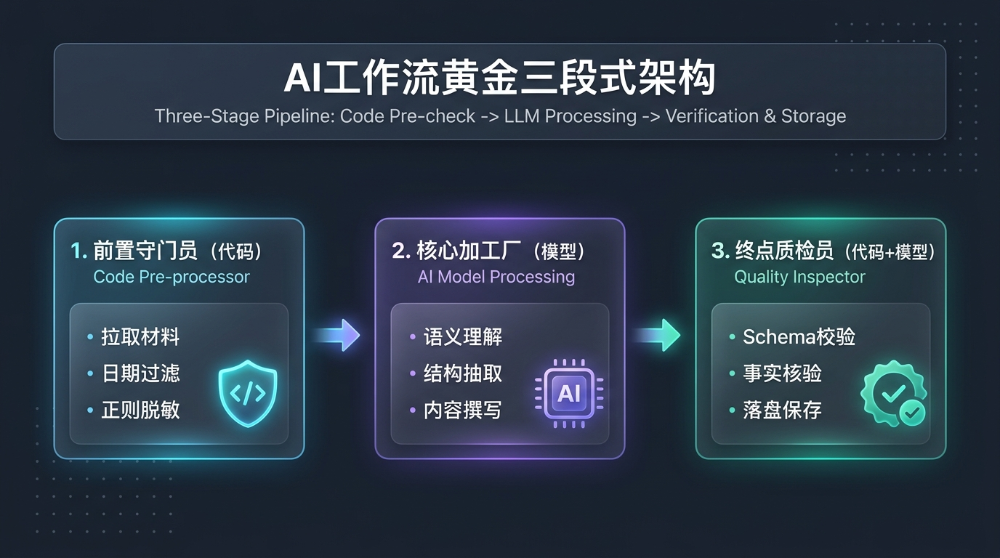
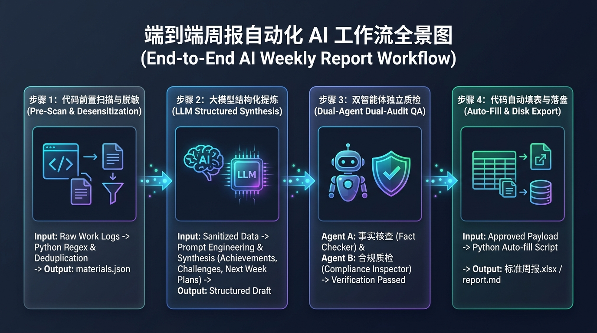
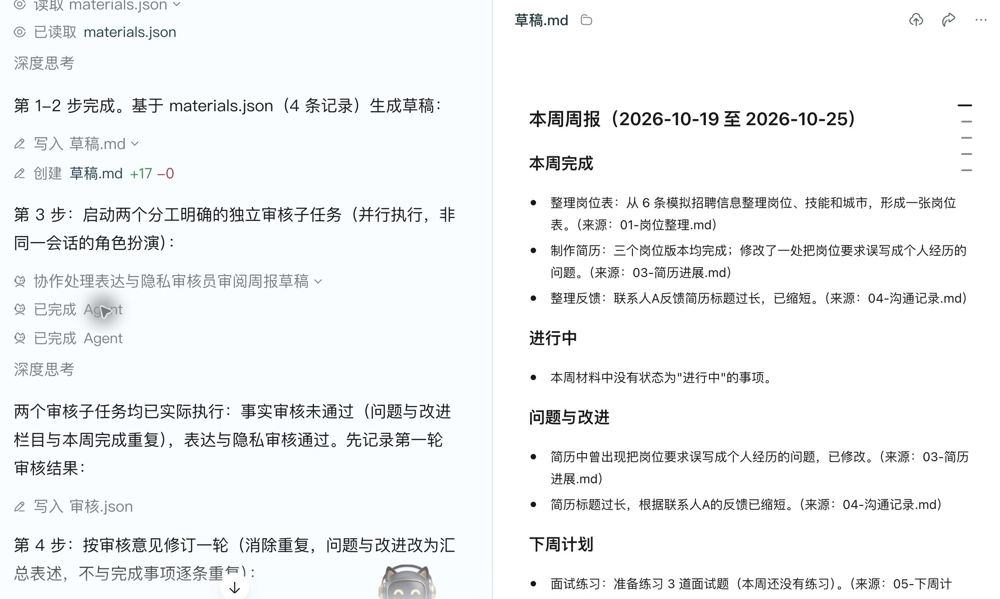
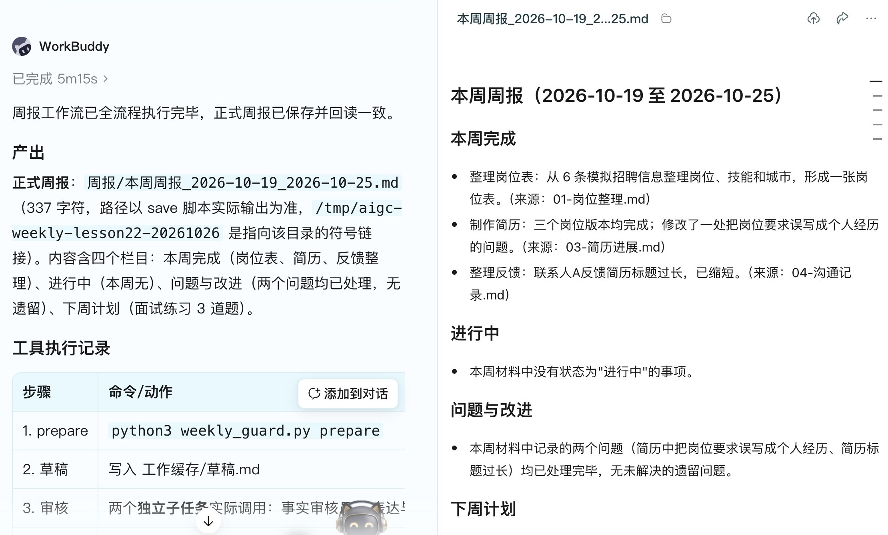
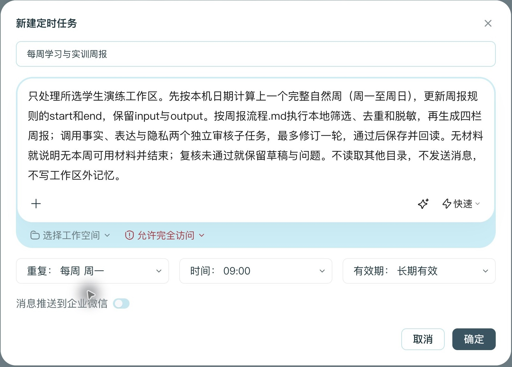
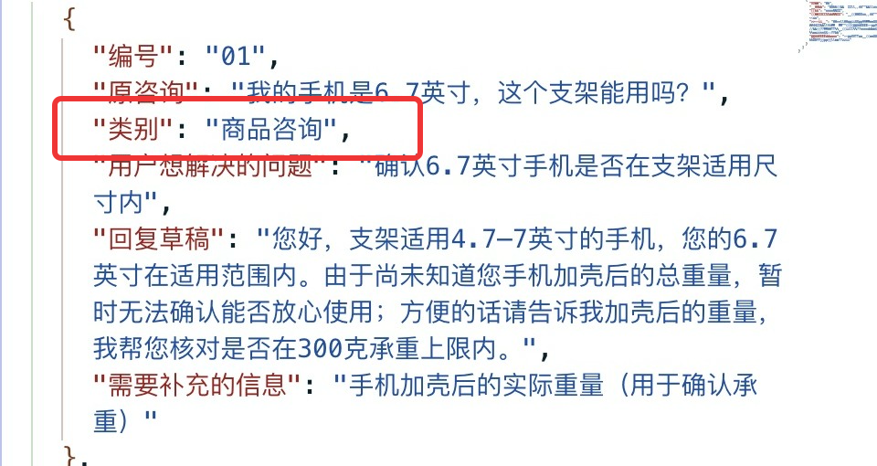
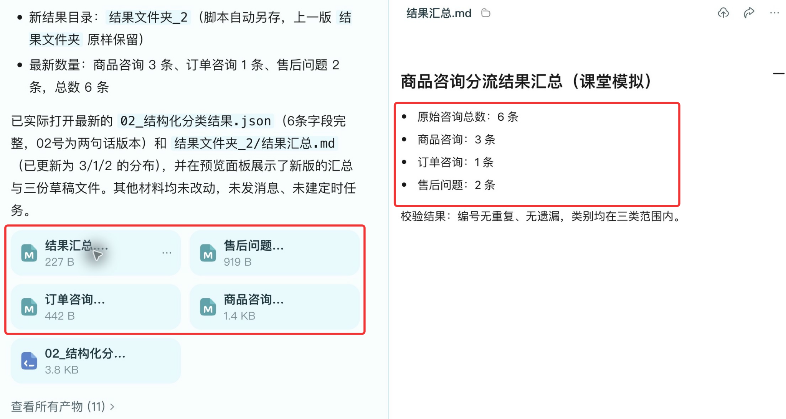

第六章｜AIGC应用与实践 · 第22次课 · 2 学时
AI工作流：让模型理解，让规则执行
00 知识回顾
上一课通过MCP让AI实际读取网页和调用工具。本课把文件读取、模型处理、规则检查与保存串成可重复执行的工作流：先看周报案例，再用同样的方法处理商品咨询。
01 任务预告
本课成果：一个能分类、生成回复并按类别保存的商品咨询工作流。 教师用周报展示“材料整理→模型生成→审核保存”；你用商品咨询练习“读取材料→分类拟回复→脚本分流保存”，修改一条回复后，再按流程说明执行一次。
主软件： WorkBuddy。课堂使用已登录、模型可用的桌面客户端和独立演练工作区；本地规则脚本需要Python 3.9及以上运行环境。选择演练目录后操作，不把整个桌面作为默认扫描范围。先手动跑通并再次执行，定时触发用于拓展。
02 基础概念
1｜AI工作流：让模型理解，让规则执行
工作流把任务拆成有明确输入和输出的步骤，每一步也叫节点，再规定先做什么、满足什么条件才继续。例如，先读材料，再生成周报；没有本周材料就结束。 在工程实践中，核心原则是：模型负责理解、归纳与发散，代码负责精确计算、字段校验与系统操作。
为什么要把长提示词拆成步骤？
把“读取材料、筛选本周、替换联系方式、统计、保存”全部写进一段提示词，可能得到结果，但出了问题不容易找到原因。拆开后，可以分别观察：
- 日期算错：模型把上个月甚至明年的记录当成本周；
- 脱敏遗漏：遇到特殊排版的手机号或邮箱直接漏掉，引发隐私合规风险；
- 数学幻觉：统计工时或完成率时算错基本加减法；
- 伪造成功：模型在回答最后宣称“已成功保存到桌面”，实际上它没有文件写入权限，文件夹里空空如也。
分步的作用：分别查看材料清单、生成内容和保存结果，发现哪一步有错，就修改对应的规则或要求。拆分本身不能保证结果正确。
大语言模型 vs 传统代码 任务分工判定表
设计工作流时，先看清模型与代码的分工：
| 任务维度 | 传统代码（Python / 规则脚本） 💻 | 大语言模型（LLM / 智能体） 🤖 |
|---|---|---|
| 处理方式 | 按已写好的规则执行；相同输入、规则和运行条件下，结果通常可重复 | 根据上下文生成内容，多次回答可能不同 |
| 擅长的任务 | • 数学计算（加减乘除、统计求和、汇率换算） • 日期与时间比对（按时间戳精确过滤本周） • 固定规则正则匹配（手机号、邮箱、身份证脱敏） • 底层系统 IO 操作（读取目录、保存文件、数据库读写） • 集合硬过滤（去重、按字段排序、空值剔除） |
• 非结构化语义理解（读懂格式杂乱的日常工作日志） • 信息归纳与提炼（从冗长事实中萃取核心进展与问题） • 文本重构与风格迁移（将口语化流水账改写为规范公文） • 意图识别与软分类（区分用户反馈是情绪抱怨还是功能缺陷） • 发散性建议（根据当前进展联想下一步合理计划） |
| 容易出现的问题 | • 固定关键词可能漏掉委婉表达 • 材料格式改变时，提取规则可能失效 |
• 不调用计算工具时，算术与计数可能出错 • 没有实际写入时，也可能回复“已保存” |
| 执行开销 | 本课的小文件处理通常较快；耗时随规则、材料与设备变化 | 需要模型调用与等待；耗时和额度随模型、输入长度及服务变化 |
| 工作流中的角色 | 骨架与安全护栏（负责拉材料、验格式、卡开关、落盘文件） | 大脑与肌肉（负责在被规则约束的盒子里做高质量思考） |
本课分工：日期、去重、字段检查与保存交给规则脚本；归纳、分类与表达交给模型。模型可以调用工具完成操作，规则本身也需要验证。
2｜变量与数据契约：下一步需要哪一份材料
变量用来保存并传递上一步的结果；数据契约就是各步骤约定好的字段名、类型和允许值。本课用JSON保存这些字段，让脚本能找到日期、事项和审核结果。
本课下一步需要读取具体事项，所以“我已经读完材料了”还不够，需要把事项写入约定的JSON清单。
| 字段 | 类型与约定 | 对应 Schema 说明 | 用在哪里 |
|---|---|---|---|
range |
array: 起止日期 | 长度为2的字符串数组 ["2026-10-19", "2026-10-25"] |
指明统计时间跨度 |
status |
string: READY 或 EMPTY | 枚举值 Enum["READY", "EMPTY"] |
流程总开关：有材料才生成，无材料提前阻断 |
items |
array: 事项对象列表 | 包含若干结构化事项 Object 的列表 | 周报生成的事实输入 |
| 项内字段 | id, date, status, title, detail, source | status 仅限 已完成、进行中、计划 |
合并进展、区分周报栏目、溯源事实 |
passed |
boolean: true 或 false | 布尔值 | 质检开关：是否达到保存标准 |
issues |
array: 问题列表 | 字符串数组 | 修改依据：未通过时指出具体修改点 |
为什么契约如此关键？
若审核结果写成一句口语“感觉写得挺好”，后续的自动化保存规则就无法使用 if result.passed == True 进行程序判断。
AI 工程师视角：合法 JSON 只代表结构符合语法，不代表内容属实。结构类型用代码自动校验，事实与夸大用模型结合材料审核。
3｜节点单一职责：生成、审核与保存分开
单一职责（Single Responsibility Principle）是指每个节点只集中做好一件核心任务。在工作流中，切忌让同一个大模型节点既决定文件范围、又去重脱敏、又撰写正文、还自己给自己打分。
| 步骤节点 | 对应智能体角色 | 为什么必须独立（技术原因） | 实际输出 |
|---|---|---|---|
| ① 本地材料整理 | 规则引擎（Python脚本） | 按固定规则筛选日期、去重和替换约定隐私；未覆盖的格式仍可能遗漏 | 脱敏事项清单 materials.json |
| ② 周报生成 | 写作智能体（LLM节点） | 聚焦归纳提炼，不受杂乱未清洗原始文件的上下文干扰 | 周报初稿 |
| ③ 事实审核员 | 事实审核子任务 | 独立读取初稿与脱敏清单，核对来源和完成状态 | 事实偏差清单与修改建议 |
| ④ 表达与隐私审核员 | 合规智能体（LLM+正则规则） | 专查套话、空话及二次生成的隐私泄露风险 | 表达问题清单与修改建议 |
| ⑤ 主理人与保存规则 | 编排器 + 文件工具（Tool） | 汇总修改意见，判定是否达标，执行真正本地写盘 | 最终版周报文件与保存回执 |
为什么分开审核？ 两个独立子任务分别拿到脱敏清单与草稿，一位核对事实，一位检查表达与隐私残留，返回具体问题位置。这样更容易看清意见来自哪项标准；不同审核角色仍可能漏错，分开执行也会增加调用与等待。
4｜条件路由与容错：按状态继续或停止
条件路由是指根据明确的变量状态（如 status == 'EMPTY' 或 passed == False），动态切换流程的执行分支。
1. 前后双置护栏（Guardrails）体系
工作流中的安全与质量由两道护栏保障：
- 输入护栏（Input Guardrails）：先在本地筛选与替换约定信息，再让模型读取清单。规则只覆盖已定义的模式，本课使用原创模拟材料。
- 输出护栏（Output Guardrails）：保存前检查审核状态、栏目和约定隐私残留；未通过就保留草稿与问题。结构检查通过不等于事实全部正确。
2. 高职学生通用：黄金三段式工作流脚手架
本课的周报与商品咨询都可以按“输入处理→模型加工→检查保存”理解；具体检查条件要随任务调整：

图解：从输入前置过滤、模型核心语义加工，到终点严格质检写盘的标准工程三段式骨架。
3. 双轨故障排查指南（Troubleshooting Checklist）
实操跑出 Bug 时，按照以下规则快速定位归因：
| 故障现象 | 根因分类 | 核心排查方向 |
|---|---|---|
| 终端直接爆红字、报错中断（Traceback） | 代码/系统错误 | 检查本地文件路径是否存在、Python 依赖库是否安装、JSON 字段拼写是否大小写一致。 |
| 程序正常结束，但没有生成周报文件 | 路由/数据错误 | 检查输入条件是不是太严格（例如 range 日期写错），导致输入材料为空触发了 EMPTY 提前结束分支。 |
| 文件生成了，但里面的事实张冠李戴/胡说八道 | 模型/Prompt错误 | 检查是否把原始材料正确传给了模型、Prompt 是否缺少“严格依据材料，严禁外推”的事实约束。 |
| 模型回复已保存，但指定目录找不到文件 | 保存结果未确认 | 查看实际写入路径和工具返回；可能是写到别处、写入失败，或根本没有执行保存。 |
03 核心案例
教师示范｜从一周求职实训记录生成周报
课堂模拟情境： 实习生每天在工作区留下岗位整理、简历进展和沟通记录等零散文本，周末需要归纳为规范周报。材料中既有不在本周的旧记录，也有同一事项不同阶段的更新版本，还夹杂着未脱敏的联系方式，以及一项尚未执行的下周计划。本例统计周期为 2026年10月19日至25日。

图解：按箭头观察材料清单怎样传给模型，以及审核通过后怎样保存文件；模板填充在第四步完成。
第一步｜创建或选择工作目录
在WorkBuddy输入框下方选择一个独立的周报演练文件夹。可以使用已有课堂材料，也可以从空目录开始，先发送下面的提示词生成输入文件。第二步才生成或检查规则脚本，不需要事先准备脚本。
图解：在输入框下方选择演练目录，再查看任务使用的工作空间。
范围要求：提示词写明只操作演练目录，执行时展开工具记录查看实际路径。选择工作空间不等于系统已经禁止访问其他目录。
先生成材料与规则： 下方内容均为课堂模拟。已有同名文件时只检查是否符合约定；内容不一致就说明差异并停止，不覆盖，也不混入其他材料。
只操作当前选中的周报演练目录，不读取其他文件夹。按以下完整内容创建缺少的文件；已有文件先核对，不覆盖不一致的内容。
先创建“教师材料”“工作缓存”“周报”三个子目录。
一、在教师材料中创建6份Markdown文件，每份首行写“# 课堂模拟工作记录”，随后每个字段单独一行，使用中文冒号：
01-岗位整理.md
编号：A01
日期：2026-10-19
状态：已完成
事项：整理岗位表
内容：从6条模拟招聘信息整理岗位、技能和城市；形成一张岗位表。
02-简历初稿.md
编号：A02
日期：2026-10-20
状态：进行中
事项：制作简历
内容：已完成两个岗位版本，第三份尚未开始。
03-简历进展.md
编号：A02
日期：2026-10-23
状态：已完成
事项：制作简历
内容：三个岗位版本均完成；修改了一处把岗位要求误写成个人经历的问题。
04-沟通记录.md
编号：A03
日期：2026-10-22
状态：已完成
事项：整理反馈
内容：模拟联系人甲反馈简历标题过长，已缩短。模拟联系电话：13000000000，模拟邮箱：demo@example.invalid。
05-下周计划.md
编号：A04
日期：2026-10-24
状态：计划
事项：面试练习
内容：下周准备练习3道面试题，本周还没有练习。
06-旧资料.md
编号：OLD
日期：2026-10-12
状态：已完成
事项：旧课程笔记
内容：整理过上周笔记，不属于本次统计范围。
二、在工作区根目录创建周报规则.json，内容为：
{
"start": "2026-10-19",
"end": "2026-10-25",
"input": "教师材料",
"output": "周报",
"aliases": {"模拟联系人甲": "联系人A", "模拟同学甲": "同学A"},
"max_files": 20,
"max_bytes_per_file": 40000
}
三、在根目录创建周报流程.md，写入以下执行说明：
1. 执行weekly_guard.py prepare，按规则筛选、去重、替换约定信息，生成工作缓存/materials.json；模型后续只读取这份脱敏清单。status为EMPTY时结束，不使用旧草稿。
2. 依据清单生成工作缓存/草稿.md，包含本周完成、进行中、问题与改进、下周计划；每项注明来源，计划不能写成完成。
3. 按本课第四步创建工作缓存/周报模板.md和weekly_report.json，再生成并执行根目录fill_weekly_report.py，将数据填入模板并写回草稿.md。
4. 把草稿和脱敏清单交给事实、表达与隐私两个实际独立审核子任务。无法调用就说明并停止，不代写审核结果。
5. 汇总意见，最多修订一轮并复核；无问题则沿用草稿。保存工作缓存/修订稿.md和审核.json。审核对象包含materials_hash、facts、expression_privacy；后两项各含passed布尔值和issues字符串数组。
6. 仅两项审核passed为true且issues为空时执行weekly_guard.py save，另存正式周报并回读。保存失败时保留具体原因，不声称完成。
7. 只读写当前工作区，保留原材料与旧结果，不发消息，不写目录外记忆。定时任务另按第五步设置，创建这些文件时不要创建定时任务。
最后列出实际创建与复用的文件路径。此时不生成周报，不调用审核，不创建定时任务；weekly_guard.py和fill_weekly_report.py分别留到第二步、第四步生成。
出现6份模拟记录、规则与流程文件后再继续；缺少哪份就先补齐哪份，不让AI自行猜测原始记录。
第二步｜生成代码：让 AI 编写工作流规则脚本 weekly_guard.py
先让AI读取工作区中的 周报规则.json、周报流程.md 和已有 weekly_guard.py，看懂 prepare（筛选与脱敏）与 save（检查与保存）两个功能。课堂材料已有脚本时直接复用，不重新覆盖；下面的要求用于理解脚本功能，缺少脚本时再据此生成并试运行。
发送下列提示词，核对或补齐规则脚本：
请只操作当前周报演练工作区，读取周报规则.json和周报流程.md。
已有weekly_guard.py时先读取并说明下列功能，不覆盖；缺少时再按规则编写，支持 prepare 和 save 两个命令行参数：
1. prepare 参数功能（前置清洗与脱敏）：
- 读取周报规则.json中的配置，获取 input 目录（如教师材料/）、start 和 end 日期范围；
- 遍历 input 目录下的所有 .md 材料，提取编号、日期、状态、事项、内容字段；
- 严格过滤出日期在 start 至 end 范围内的本周记录，排除非本周旧数据；
- 同一编号事项若有多条记录，按日期保留最新的一条进展，自动去重；
- 隐私处理：按规则替换约定模拟姓名，将匹配的模拟手机号替换为 [电话已隐藏]，邮箱替换为 [邮箱已隐藏]；
- 将选入的有效事项输出为结构化清单 工作缓存/materials.json，并生成 materials_hash。
2. save 参数功能（终点质检与落盘）：
- 读取工作缓存/审核.json，检查materials_hash与当前材料一致，facts和expression_privacy的passed均为true且issues为空；
- 检查修订稿非空、四个栏目齐全且没有规则指定的隐私残留；目录保持在演练工作区内，已有同名结果另存版本；
- 质检通过后，将工作缓存/修订稿.md 写入 output 目录中的正式周报文件并回读验证。
脚本生成后，发送下列任务指令，驱动本地代码执行 prepare 预处理：
先读取周报规则.json和周报流程.md，按规则执行weekly_guard.py的prepare操作。
不要用模型直接读取教师材料的原始正文；只读取脚本生成的工作缓存/materials.json用于后续生成。
展示选入事项数和排除原因，停在准备完成，不生成周报，不创建定时任务。
执行结果与分析：
脚本执行后，在工作区自动生成了标准数据契约文件 工作缓存/materials.json：
- 精确过滤：6 份杂乱材料中，1 份超期旧记录被精准排除；
- 版本去重：同编号事项若有多条进展，只保留最新一条记录；
- 本地脱敏：约定模拟姓名、电话与邮箱由本地脚本替换；模型后续读取处理后的清单。原文中的未知格式仍可能遗漏，不用真实私人信息测试。
第三步｜模型加工：大模型语义理解与提炼
将第二步生成的 materials.json 喂给大模型。大模型无需关心底层文件如何读取，而是专注于其擅长的非结构化语义理解能力，从事项材料中提炼出结构严整的周报核心内容。
发送下列结构化加工提示词：
读取当前工作缓存/materials.json，只根据其中items提炼本周工作进展。
重点归纳：
1. 本周完成：具体成果与证据
2. 进行中：当前卡点与攻关进展
3. 问题与改进：反思分析
4. 下周计划：明确下周待办事项（严禁将计划冒充已完成）
每个要点注明来源文件名。如果status为EMPTY，直接说明本周没有可用材料并结束。
将草稿保存为工作缓存/草稿.md，暂不保存正式周报；后续模板填充以这份草稿和材料清单为依据。

图解：右侧查看四栏草稿，左侧展开协作记录查看审核子任务；第四步将对填充后的草稿执行审核。
质量要求：大模型必须严格基于 materials.json 中的事实，不得凭空外推；计划事项绝不能写成已完成。
第四步｜生成周报模板，生成 JSON，填入文件
本阶段把第三步草稿整理为结构化数据，填入模板后审核并保存。文件顺序是：草稿.md→weekly_report.json→填充后的草稿.md→修订稿.md→正式周报。
1. 生成周报模板
向 AI 发送指令，在工作区生成标准排版的周报模板文件：
请在工作缓存目录下创建一个规范的周报模板文件 周报模板.md：
包含标准化的一级标题与四个核心栏目：
- 标题：2026年第43周实习与实训工作周报
- 栏目1：【本周完成】（记录具体成果与产物）
- 栏目2：【进行中】（记录当前进展与卡点）
- 栏目3：【问题与改进】（记录反思与改进建议）
- 栏目4：【下周计划】（记录下周明确待办）
排版整洁，各栏目预留出标准占位符，供后续数据自动填入。
占位符分别为{{completed}}、{{in_progress}}、{{issues}}、{{next_week_plan}}。
2. 生成周报结构化 JSON
驱动大模型读取清洗后的材料清单，生成严格符合 Schema 契约的结构化数据文件：
读取工作缓存/草稿.md，并对照当前工作缓存/materials.json，将已有内容整理为weekly_report.json，不另编事实：
必须包含以下四个数组字段：
1. "completed": 本周完成项（注明具体成果与来源文件名）
2. "in_progress": 进行中事项（注明当前进度）
3. "issues": 遇到的问题与反思改进方案
4. "next_week_plan": 下周明确的工作计划（严禁把未发生的事项混入已完成）
确保内容真实可溯源，格式必须为标准合法 JSON，保存至 工作缓存/weekly_report.json。
四个数组中的每项均使用对象，包含text（内容文字）和sources（来源文件名数组）。无对应事项时用空数组，不为填满栏目增加内容。
3. 填入文件并自动化落盘
发送执行指令，将结构化数据自动注入模板，并通过规则脚本完成终点质检与写盘保存：
先在工作区根目录生成fill_weekly_report.py，再实际运行；已有脚本先检查其功能，不直接覆盖。
脚本只使用Python标准库，读取工作缓存/weekly_report.json、工作缓存/周报模板.md和根目录周报规则.json。
检查四个字段均为数组，数组项均有text文字和sources字符串数组；结构不符就指出字段并停止。
将各项text与来源文件名排成列表，替换模板对应占位符；空数组填“无”，日期标题按周报规则生成。
结果写回工作缓存/草稿.md，展示文件路径并检查没有遗留占位符。保存规则脚本不承担模板填充。
将这份填充后的草稿与脱敏材料清单分别交给两个实际独立审核子任务：
事实审核员检查来源、完成状态、重复与夸大；表达与隐私审核员检查空话、语句和约定隐私残留。
若不能调用独立子任务，说明原因并停止，不代写成员结论。
按周报流程.md汇总实际意见，最多修订一轮并复核；无问题时沿用草稿。
修订稿写到工作缓存/修订稿.md，实际复核结果写到工作缓存/审核.json。
审核记录先复制当前materials.json中的materials_hash，再包含facts和expression_privacy，两者各有passed布尔值与issues列表。
仅在两项passed都为true、issues都为空时，执行weekly_guard.py的save操作。
保存后回读实际生成的文件，给出可打开的本地路径和字数。若规则拒绝保存，展示真实原因并停止。
不要改原材料，不创建定时任务，不发送或公开周报。

图解：左侧查看保存与回读结果，右侧打开正式周报；模板填充与正式保存是两个动作。
闭环检验：必须在返回路径中真实打开周报文件。模型口头回答“已保存”不代表成功，只有操作系统文件系统出现该文件，才证明流程执行完毕。
第五步｜拓展：用提示词设置每周定时任务
单次周报流程跑通并回读后，可在当前对话中要求WorkBuddy创建定时任务。随后到“定时任务”列表检查周期、时间和工作空间；若只返回操作说明而没有实际任务，就在“新建”中填写同样的设置。
时间设定为每周一09:00，整理上一个完整自然周。例如10月26日运行时，统计10月19日至25日。电脑需开机并保持唤醒，WorkBuddy需运行、登录且模型服务可用。
先补齐日期脚本与重复执行说明： 第一次设置定时任务前发送下方提示词，避免任务启动后才发现缺少日期脚本或模板步骤。
只在当前周报演练目录操作。
先创建缺少的update_week.py；已有时读取并核对，不直接覆盖。脚本只使用Python标准库，按脚本所在目录定位周报规则.json。
读取本机当前日期today，令本周周一=today减去today.weekday()天；start=本周周一减7天，end=本周周一减1天，使用YYYY-MM-DD格式。
只更新规则的start和end，保留input、output、aliases及其他字段；规则缺失、JSON无效或字段不符时停止并说明，不另造空规则。
在临时副本验证：today为2026-10-26时得到2026-10-19至25日；today为2027-01-01时得到2026-12-21至27日。不改当前课堂规则日期。
核对根目录weekly_guard.py和fill_weekly_report.py、工作缓存/周报模板.md均已在前面步骤生成；缺少时指出应先返回哪一步，不创建空占位文件。
在周报流程.md补充定时运行顺序：update_week.py→prepare→生成新草稿→生成新的weekly_report.json→fill_weekly_report.py→独立审核与最多一轮修订复核→save与回读。
每轮基于本次清单重新生成草稿和审核；EMPTY时直接结束。日期、周次标题按本轮规则计算，不固定写第43周。
返回脚本与流程文件的实际路径。暂不运行正式周报，不创建定时任务。
在任务完成后的当前对话框中直接发送下列提示词：
请把我们刚才验证跑通的周报工作流，整理并创建为一个自动定时任务：
1. 任务名称：每周学习与实训周报自动生成
2. 触发策略：设定为每周一09:00执行
3. 执行逻辑：
- 自动运行 update_week.py，按本机当前日期将 start 和 end 动态更新为上一个自然周的周一与周日；
- 调用 weekly_guard.py 执行 prepare 操作，完成材料扫描、日期过滤与正则隐私脱敏；
- 驱动模型生成草稿，整理weekly_report.json并填入周报模板，写回工作缓存/草稿.md；
- 由事实审核员与表达隐私审核员独立审核，最多修订一轮并复核，生成修订稿.md与审核.json；
- 审核通过后执行 weekly_guard.py 的 save 操作，将最终周报安全落盘至周报目录；
- 若无本周材料则说明无可用记录并安全结束，不沿用旧草稿，不发外部消息。
工作空间沿用当前周报演练目录，只读写该目录，不发消息、不写目录外记忆。企业微信推送关闭。
完成创建后返回实际任务名称、周期、下一次执行时间和工作空间；无法创建就说明原因，不声称已创建。

图解：新建表单中可查看每周一09:00与执行要求；下方还需选择工作空间，确认后再到任务列表查看。
用“立即运行”检查本次结果，并打开对应周报文件。立即运行成功不等于已验证到点触发；到点后还要查看运行记录。课堂练习结束后暂停演练任务。
04 实践任务｜商品咨询工作流
情境与成果： 你负责一家手机配件网店的客服。用WorkBuddy读取商品资料和6条咨询，分类并生成回复草稿，按类别保存；跑通后，把这套操作整理成可以再次执行的工作流。
流程： 读取材料→AI分类与拟回复→脚本分流保存→修改一条回复→整理工作流并再次运行。前四步使用下方课堂模拟材料；第五步把已经跑通的过程固定下来，定时处理新增咨询为选做。回复草稿保存到本地，不自动发给客户。
操作①｜准备商品资料与咨询
在WorkBuddy新建任务，选择一个空的演练文件夹作为工作空间。发送下面的材料，保存为两个文件。商品参数与咨询均为课堂模拟。
创建 product_info.md，写入以下商品资料：
商品：桌面折叠手机支架
标价：19.9元
适用手机尺寸：4.7—7英寸
承重上限：300克，包含手机壳和其他配件的重量
特点：角度可调、底部有防滑垫，供桌面使用
包装：支架1个、固定螺丝1套
未提供：优惠、库存、发货时间、具体订单信息、售后处理结果
创建 customer_messages.json，内容为：
[
{"编号":"01","原咨询":"我的手机是6.7英寸，这个支架能用吗？"},
{"编号":"02","原咨询":"我的手机加壳一共340克，能放在这个支架上吗？"},
{"编号":"03","原咨询":"19.9元有点贵，能便宜一点吗？"},
{"编号":"04","原咨询":"我今天下单，什么时候能发货？"},
{"编号":"05","原咨询":"收到的包装里没有固定螺丝，怎么办？"},
{"编号":"06","原咨询":"支架用了几天，转轴松了，怎么处理？"}
]
操作②｜分类并生成回复草稿
继续发送下面的要求，让模型按同一口径分类。回复依据取自商品资料，资料中没有的内容写明需要补充什么。
| 类别 | 包含哪些问题 | 回复怎样处理 |
|---|---|---|
| 商品咨询 | 尺寸、承重、功能、价格与优惠 | 已有资料直接回答；没有优惠信息就说明需要确认 |
| 订单咨询 | 库存、发货、物流与具体订单 | 资料不足时说明缺什么，不猜发货时间 |
| 售后问题 | 缺件、损坏、使用故障 | 针对问题追问必要信息，不承诺退款或补发结果 |
读取 product_info.md 和 customer_messages.json。
按以下口径分类：尺寸、承重、功能、价格与优惠归“商品咨询”；库存、发货、物流归“订单咨询”；缺件、损坏、使用故障归“售后问题”。
混合咨询按“售后问题→订单咨询→商品咨询”的优先级选择一类。
逐条生成简短、礼貌的回复草稿，参数只取自 product_info.md，不编造折扣、发货时间或售后结果。
保存为 classified_messages.json，顶层使用数组，每条包含：编号、原咨询、类别、回复草稿、需要补充的信息。
类别只能是商品咨询、订单咨询、售后问题；没有需要补充的信息时填写“无”。
看懂分工： 340克超过300克上限，可以按明确数值判断；怎样把限制解释得清楚、礼貌，由模型组织语言。尺寸合适还不代表承重合适，不能直接承诺“放心使用”。

红框中的“类别”是脚本读取的字段；本任务把包含这些字段的结果保存为 classified_messages.json。
操作③｜运行脚本，按类别保存
让WorkBuddy生成并运行 route_messages.py。学生不必输入代码，重点看程序是否按已有的“类别”字段保存结果。
生成并运行 route_messages.py，读取 classified_messages.json，不重新调用模型分类；同时读取customer_messages.json核对原始编号集合。
将类别映射为三个固定文件：
商品咨询 → product_replies.md
订单咨询 → order_replies.md
售后问题 → after_sales_replies.md
在 results 下新建本次运行子目录，把三份回复文件保存进去。
每条显示编号、原咨询、回复草稿、需要补充的信息。
同时生成 summary.md，列出原始咨询总数和三类各有几条。
检查编号是否重复或遗漏、类别是否有效；有问题就报告具体编号并停止，不随意归类。
保留原始文件与旧结果。运行完成后打开本次生成的三份回复和 summary.md。

红框展示按类别保存与数量汇总的状态；本任务三类文件分别命名为 product_replies.md、order_replies.md、after_sales_replies.md。
操作④｜修改一条回复，查看结果
选一条回复提出具体修改。例如，把承重说明改成两句话，先回答能不能用，再解释依据。修改结构化结果后重新运行脚本，避免只改显示出来的文字。
把 classified_messages.json 中02号的回复改为两句话：先回答能不能使用，再说明承重依据；保留其他咨询的内容。
重新运行 route_messages.py，另存本次结果，打开新的 product_replies.md 和 summary.md。
集中看三点：6条咨询都有归属；参数与资料一致；三个分类文件与 summary.md 的数量对应。完成后继续操作⑤，验证流程可以再次执行；进阶选做新增一条混合咨询，观察分类优先级怎样改变结果。
操作⑤｜整理成可重复运行的工作流
前四步跑通后，让WorkBuddy把输入文件、执行顺序和保存位置写进 workflow.md。这份文件是明确的执行说明；以后由WorkBuddy读取并调用脚本完成任务，不是保存一份说明就已经自动运行。
把刚才跑通的商品咨询处理过程整理成 workflow.md，使用当前已经可用的文件和脚本。
写清以下内容：
1. 输入：product_info.md 和 customer_messages.json。
2. 模型处理：按商品咨询、订单咨询、售后问题分类，生成回复草稿，保存为 classified_messages.json。
3. 规则处理：实际运行 route_messages.py，对照原始咨询核对编号，按“类别”字段分别保存 product_replies.md、order_replies.md、after_sales_replies.md，并生成 summary.md。
4. 输出：每次在 results 下新建本次运行子目录，保留旧结果；返回实际目录与文件路径。
5. 停止条件：输入文件不存在、编号重复、类别无效或脚本报错时，说明问题，不声称已经完成。
在说明里保留三类的具体判定口径，价格和优惠归商品咨询；回复不编造未提供的优惠、发货或售后结果。
然后在同一工作空间发送一句话：
按 workflow.md 执行本次商品咨询处理，实际调用 route_messages.py，打开新生成的 summary.md 和一份分类回复文件。
看到新结果目录、数量汇总和实际文件，才说明这份工作流能够再次执行。如果文件位置或脚本调用失败，让WorkBuddy修改 workflow.md 中对应的一步，再运行一次；不重新编写整套长提示词。
选做｜每小时处理新增咨询
先向 customer_messages.json 添加一条新编号的模拟咨询，再让WorkBuddy准备增量处理：用 processed_messages.json 记录已经成功处理的编号和原咨询内容，内容改变的旧编号也需要重新处理。首轮运行会处理全部咨询；之后没有新增或变化时就结束。
在 workflow.md 中增加增量处理规则，并生成运行所需的本地辅助脚本：
先在根目录创建缺少的processed_messages.json，初始内容为{"items":[]}；已有时读取并保留记录，不清空。
items的每项使用{"编号":"字符串","原咨询":"字符串"}，仅记录已经成功分流保存的咨询。
生成incremental_guard.py，支持prepare和commit两个操作，并把实际运行方法写入workflow.md。
prepare读取原始咨询与已处理记录，生成pending_messages.json，顶层为数组；首次没有已处理记录时，全部咨询均待处理。
比较 customer_messages.json 与 processed_messages.json，只处理新编号或原咨询内容发生变化的条目。
先在本地确定待处理条目，再交给模型分类与拟回复。
让route_messages.py支持通过参数指定本轮原始咨询文件：普通运行核对customer_messages.json，增量运行核对pending_messages.json；结果编号集合须与本轮输入完全一致。
只有分类、分流和保存全部成功后，才更新 processed_messages.json；失败条目保留到下次处理。
commit只合并本轮实际成功保存的编号与原咨询；没有成功保存结果时拒绝更新。不把全部原始咨询直接标为已处理。
没有待处理条目时返回“无新增咨询”，不调用模型重写旧回复，不新建重复结果。
创建缺少的run_log.jsonl为空文本文件，已有则保留；在辅助脚本中追加时间、待处理数量、成功数量、结果目录或失败原因，勿覆盖旧日志。
请手动试运行一次，展示待处理数量和实际保存路径。
确认增量处理能运行后，再创建定时任务：
创建本地定时任务“每小时商品咨询处理”，每60分钟运行一次，工作空间沿用当前演练目录。
每次按 workflow.md 执行增量处理；读取 product_info.md、customer_messages.json 和 processed_messages.json。
没有新增或变化的咨询时记录“无新增咨询”并结束。
执行后将时间、待处理数量、成功数量、结果目录或失败原因追加到 run_log.jsonl。
保留历史结果，不发送客户消息，不连接聊天软件。
创建后显示执行周期、下一次执行时间和工作空间。
在“定时任务”里查看周期和工作空间，点“立即运行”测试一次。没有新咨询时，应结束并记录“无新增咨询”；加入一条新咨询后再次运行，应只处理这一条。电脑需开机并保持唤醒，WorkBuddy需运行且模型服务可用。课堂练习结束后暂停任务。
观察重点： workflow.md 说明做什么、按什么顺序做；模型负责理解与表达；脚本负责分流和保存；定时器决定什么时候再次执行。基础任务做到再次运行即可，增量处理与定时触发为选做。
操作参考： WorkBuddy定时任务。
05 本课总结
| 成果自查 | 能展示的表现 |
|---|---|
| 输入与分工 | 能指出商品资料、原始咨询、模型分类结果，以及脚本读取的类别字段 |
| 回复与分类 | 6条咨询无遗漏无重复；参数有依据，未知优惠、发货与售后结果没有编造 |
| 修改与保存 | 修改02号的结构化回复后重新运行；分类文件与summary.md数量一致，旧结果保留 |
| 再次执行 | 按workflow.md生成新的结果目录，打开汇总和一份回复；能说明一种停止条件 |
后续衔接： 同样的文件读取、数据契约、角色分工和结果保存方法，可以用于后续大作业。把一次完整操作变为可重复的流程，才具备继续定时执行的基础。